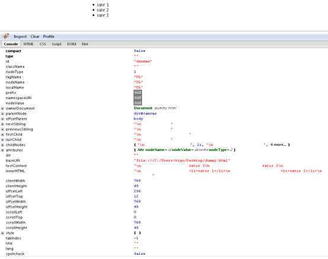

3.satırda, olmayan bir objeye erişmek istiyoruz.id’si results olan bir DIV olabilir? yada herhangi bir HTML nesnesi.
Böyle bir element olmadığı için try{ koşul ... } adından da anlaşılacağı gibi {} içinde kalan kısımdaki koşulu deneyecek! Eğer koşul hatalı ise yani FALSE ise, catch() devreye girecek. catch( e ) yani e aslında javascript engine’ninin RAISE ettiği bir event’dir. Yani hata oluştuğu zaman execption yaratılır. Bu bize e objesi olarak döner.
7.satırda firebug console’a bakınca e’ye ait property’leri görürüz.
finally{} ise catch( e ){} işleminden sonra çalışır.
Sonuç olarak try{} ile işlem yapılmaya çalışır. catch( e ){} ile hata yakalanır ve son olarak gerekiyorsa finally{} ile son bir işlem daha yapılır.
İlk derslerimizde, D.O.M’dan bahsetmiştik. Document Object Modelling. ( Şema )
D.O.M içersinde herşey OBJECT’lerden oluşur. document altında;
gibi objeler bunulur. Bunlara koleksiyon da denir. ( Mozilla / document )
Koleksiyon dışında da objelere çeşitli metodlarla erişebiliriz. Bunlardan en iyi bildiğimi getElementById dir. Adından da anlaşılacağı gibi, ID’si ... olan element e erişmek için kullanılır.
Aşağıdaki kod’a bakalım :
Örneği indirmek için tıklayın.

UL objesine ait metodlar ve özellikler...
Firebug console bize UL objesine ait her türlü bilgiyi verir. Tüm metodları, özellileri, node’ları vs vs vs...
Button’a tıkladığımız zaman add_style fonksiyonuna 2 parametre geçeriz. Daha önceki derslerimizde, CSS özelliklerini işlerken, herhangi bir objeye border stili vermek için; border-bottom: 1px solid #000; şeklinde bir ifade kullanırız. CSS’deki her property’nin javascript’de de karşılığı bulunmaktadır. Hatırlanması kolay olsun diye; eğer border-bottom: gerekiyorsa javascript karşışığı : style.borderBottom eğer padding-top: ise style.paddingTop gibi kullanılır. Her CSS özelliğinin bu şekilde bir JAVASCRIPT karşılığı vardır.
Amacımız, ID’si “deneme” olan UL’ye ait tüm LI’lerin border-bottom: CSS’ini modifiye etmek.
3.satırda gereken UL’ye erişiyoruz. Browser farklarından dolayı, myUL.childNodes.length her browser’da ( aslında özellikle internet explorer’da ) farklı gelebilir. Bu durumu önlemek için, sadece nodeType’ı 1 olanları alıyoruz.
myLI’de artık ilgili LI var. 9.satırda da istediğimiz özelliği ve değerini style objesine yerleştiriyoruz.